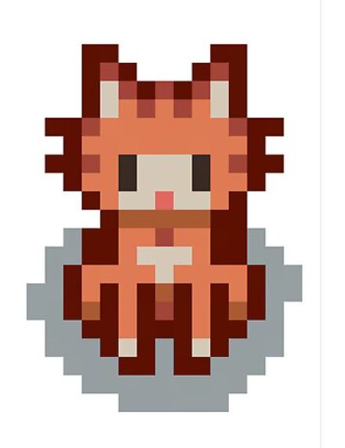
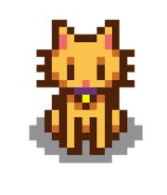
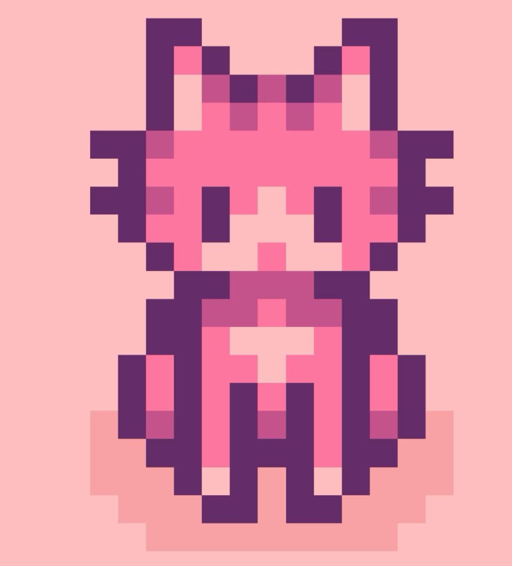
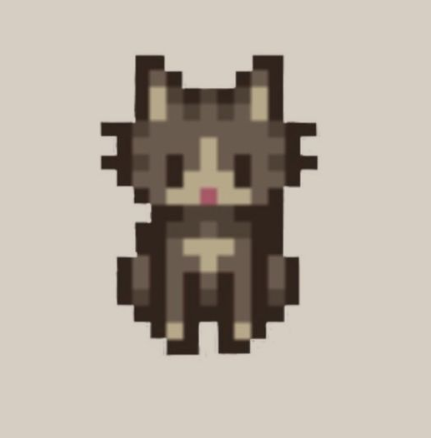

Jujubinha
Gato fêmea laranja dócil e brincalhona. Aproximadamente 2 anos. Convive bem com outros animais e adora banho.

Alfredo
Gato macho amarelo dorminhoco. 3 anos. Nunca foi na rua, reservado com humanos.

Teco
Gato macho rosa medroso. 8 meses. Tem medo de outros seres mas é muito amoroso quando desenvolve confiança. Gosta somente de areia sem cheiro.

Lily
Gato fêmea adulta cinza. Muito adaptável e confia muito facilmente nas pessoas. Faz pãozinho nos humanos sempre que dá.